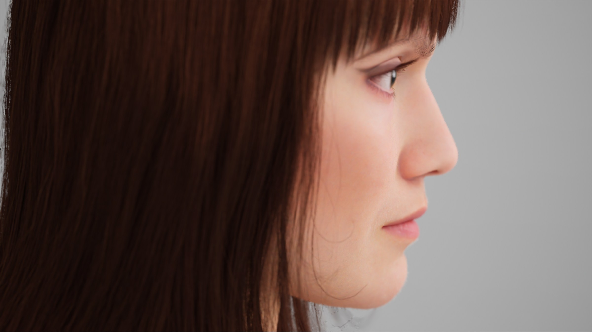
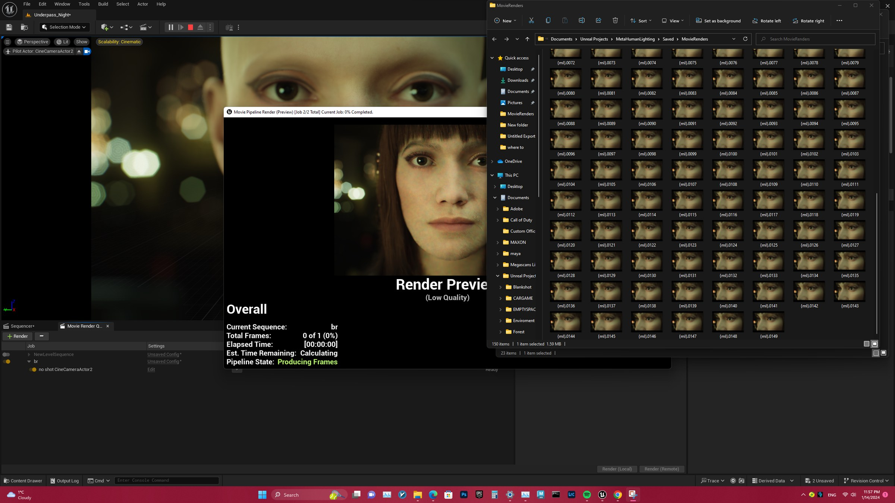
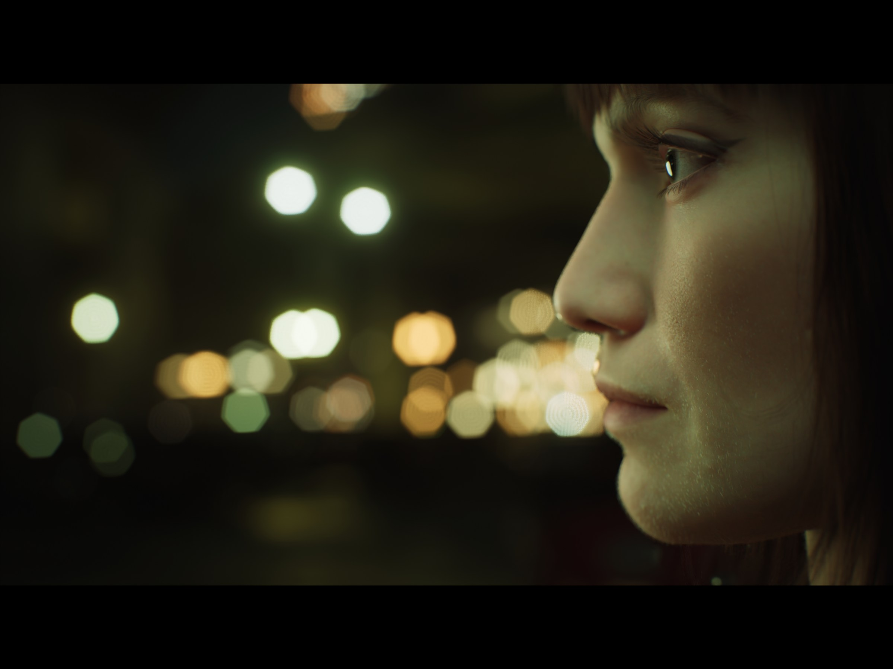
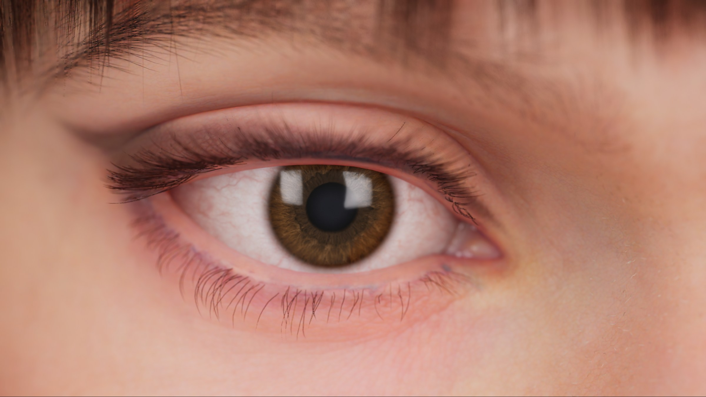
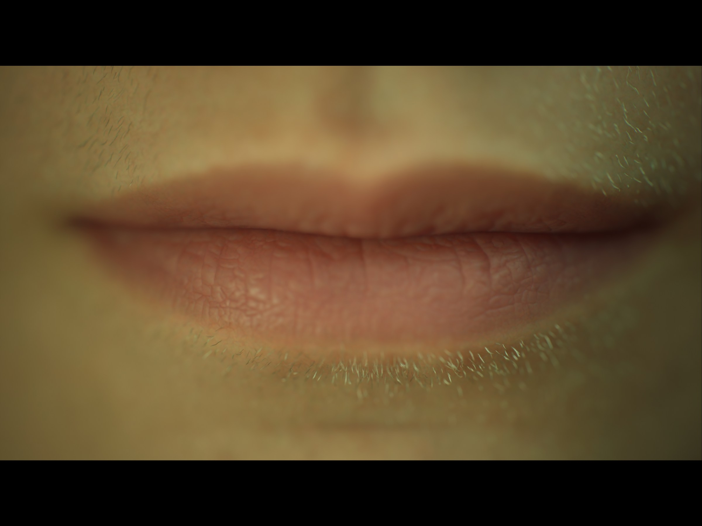

Realtime character study / Unreal Engine 5
The MetaHumans
A virtual portrait shaped through character design, light, camera, and realtime image-making.
01
Constructing a presence
We began by creating a MetaHuman and bringing the character into Unreal Engine 5. The detailed face was a starting point, not the finished work. Proportion, skin, hair, eyes, and expression were adjusted until the model began to feel less like a demonstration and more like a subject.
The project continues my interest in portraiture: how little is required for a face to suggest identity, interior life, or memory, even when that face belongs to no physical person.


02
Lighting the unreal
Lighting became the emotional structure of the project. Soft light across the skin, deep surrounding darkness, and distant green and amber points transformed the digital model into a cinematic figure. Working in realtime made light feel immediate: it could be moved, observed, and refined like light on a photographic set.


03
The camera as encounter
Frontal views create an immediate meeting with the character. Profiles and low camera angles make the same face private, monumental, or suspended inside an artificial night. Realtime rendering allowed these relationships between face, lens, and environment to be discovered through looking rather than waiting.

04
At the edge of the image
Extreme close-ups reveal where the illusion becomes most fragile. The eye, eyelashes, skin, and mouth are technical surfaces, yet they are also where viewers search most instinctively for life.
These details hold the central tension of the work: a face can be entirely constructed and still create an intimate response.

